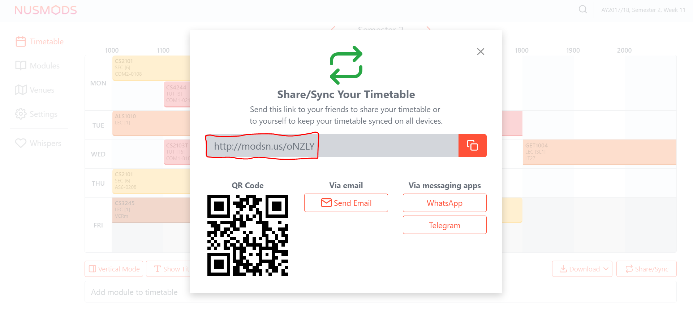

By: Team W11-B4 Since: Feb 2018 Licence: MIT
- 1. Introduction
- 2. Quick Start
- 3. Features
- 3.1. Contact Commands
- 3.2. NUS Commands
- 3.3. Utility Commands
- 3.3.1. Viewing help :
help - 3.3.2. Adding a command alias:
alias(since v1.1) - 3.3.3. Removing a currently existing alias:
unalias(since v1.3) - 3.3.4. Listing entered commands :
history - 3.3.5. Undoing previous command :
undo - 3.3.6. Redoing the previously undone command :
redo - 3.3.7. Clearing all entries :
clear - 3.3.8. Encrypting data files :
encrypt(since v1.2) - 3.3.9. Removal of password:
decrypt(since v1.3) - 3.3.10. Importing data :
import(since v1.1) - 3.3.11. Exporting data :
export(since v1.4) - 3.3.12. Uploading data :
upload(since v1.5rc) - 3.3.13. Exiting the program :
exit - 3.3.14. Saving the data
- 3.3.1. Viewing help :
- 4. Upcoming Features
- 5. FAQ
- 6. Troubleshooting
- 7. Command Summary
1. Introduction
-
Stardy Together (ST) is for NUS Students who prefer to use a desktop app for managing NUS friends' contacts.
-
More importantly, ST is optimized for those who prefer to work with a Command Line Interface (CLI) while still having the benefits of a Graphical User Interface (GUI).
-
If you can type fast, ST can get your contact management tasks done faster than traditional GUI apps.
-
This guide provides a list of features that are available on ST and their usage.
-
Interested? Jump to the next section, Section 2, “Quick Start”, to get started. Enjoy!
2. Quick Start
-
Ensure you have Java version
1.8.0_60or later installed in your Computer.Having any Java 8 version is not enough.
This app will not work with earlier versions of Java 8. -
Download the latest
StardyTogether.jarhere. -
Copy the file to the folder you want to use as the home folder for your StardyTogether.
-
Double-click the file to start the app. The GUI should appear in a few seconds.

-
Type the command in the command box and press Enter to execute it.
e.g. typinghelpand pressing Enter will open the help window. -
Some example commands you can try:
-
list: lists all friends and aliases -
addadd n/John Doe p/98765432 e/johnd@example.com a/John street, block 123, #01-01 b/01011995 tt/http://modsn.us/oNZLY: adds a friend namedJohn Doeto ST. -
delete3: deletes the 3rd friend shown in the current list -
exit: exits the app
-
-
Refer to the next section, Section 3, “Features”, for details of each command, or refer to Section 7, “Command Summary” for the summary of all the commands.
3. Features
Command Format
-
Words in
UPPER_CASEare the parameters to be supplied by the user e.g. inadd n/NAME,NAMEis a parameter which can be used asadd n/John Doe. -
Items in square brackets are optional e.g
n/NAME [t/TAG]can be used asn/John Doe t/friendor asn/John Doe. -
Items with
… after them can be used multiple times including zero times e.g.[t/TAG]…can be used ast/friend,t/friend t/familyetc. -
Parameters can be in any order e.g. if the command specifies
n/NAME p/PHONE_NUMBER,p/PHONE_NUMBER n/NAMEis also acceptable.
3.1. Contact Commands
3.1.1. Adding a friend: add
To add a friend to ST, you can enter the command add followed by the various parameters
Format: add n/NAME p/PHONE_NUMBER e/EMAIL a/ADDRESS b/BIRTHDAY tt/TIMETABLE [t/TAG]…
| A friend can have any number of tags (including 0) |
|
| If timetable is invalid, left empty or there is no internet access, an empty timetable will be created for you |
For more information on how to get a valid link, refer to Section 5, “FAQ”.
Examples:
-
add n/John Doe p/98765432 e/johnd@example.com a/John street, block 123, #01-01 b/01011995 tt/http://modsn.us/oNZLY -
add n/Betsy Crowe t/friend e/betsycrowe@example.com a/Newgate Prison p/1234567 b/28021997 tt/http://modsn.us/ojGeu t/criminal
3.1.2. Listing all friends and aliases: list
To show a list of all your friends and a table of created aliases in ST, you can enter the command list
Format: list
3.1.3. Editing a friend : edit
To edit a friend’s particulars, you can enter the command edit followed by the respective parameters you wish to edit.
Format: edit INDEX [n/NAME] [p/PHONE] [e/EMAIL] [a/ADDRESS] [b/BIRTHDAY] [tt/TIMETABLE] [t/TAG]…
Examples:
-
edit 1 p/91234567 e/johndoe@example.com
Edits the phone number and email address of the 1st friend to be91234567andjohndoe@example.comrespectively. -
edit 2 n/Betsy Crower t/
Edits the name of the 2nd friend to beBetsy Crowerand clears all existing tags.
3.1.4. Locating friends by name: find
To find specific friends by their names, you can enter the command find, followed by KEYWORD.
Format: find KEYWORD [MORE_KEYWORDS]
Examples:
-
find John
ReturnsjohnandJohn Doe -
find Betsy Tim John
Returns any friend having namesBetsy,Tim, orJohn
3.1.5. Deleting a friend : delete
To remove a specified friend from ST :cry: , you can enter the command delete followed by his INDEX.+
Format: delete INDEX
Examples:
-
list
delete 2
Deletes the 2nd friend in ST. -
find Betsy
delete 1
Deletes the 1st friend in the results of thefindcommand.
3.1.6. Selecting a friend : select
To select a friend, you can identify his/her index number used in the last friend listing and enter the command select followed by his/her index+
Format: select INDEX
Examples:
-
list
select 2
Selects the 2nd friend in ST. -
find Betsy
select 1
Selects the 1st friend in the results of thefindcommand.
3.1.7. Viewing a collated birthday list/notification: birthdays (since v1.3)
To get a list that contains all the birthdays of all your friends (ordered by date)
Or to know whose birthday is it today, you can enter the following commands
Format: birthdays [ADDITIONAL_PARAMETER]
The following parameters can be inputted into the [ADDITIONAL_PARAMETER] field
Examples:
-
birthdays
Displays a list of all your friends' birthdays
-
birthdays today
Displays a window with the birthdays occuring today

3.2. NUS Commands
3.2.1. Viewing common time slots in timetable: union (since v1.5rc)
To know your free slots together with your friends, you can use union to display the common free time of multiple friends in ST. (Minimum: 2)
Format: union ODD/EVEN INDEX INDEX [INDEX]…
| ODD/EVEN is case-insensitive |
| Only indexes of the current filtered list are valid |
Examples:
-
union Odd 1 2 3
Displays the combined odd timetable for friends at Index 1, 2 and 3.
image::timetableUnion.PNG
-
union Even 1 2
Displays the combined even timetable for friends at Index 1 and 2.
3.2.2. Vacant study rooms finder : vacant (since v1.3)
To get a list of study rooms in the specified building and their vacancy (in blocks of 1 hours), you can enter vacant follwed by the BUILDING code.
Format: vacant BUILDING

The building must be in NUS venue format, e.g. COM1, S17, E2
|
Examples:
-
vacant COM1
Finds the vacancy status of study rooms in COM1 building.
3.2.3. Google maps display : map (since v1.4)
To find locations or a path from one place to another, you can enter the command map along with the locations to launch Google Maps with the specified location(s).
Format: map LOCATION or map LOCATION/LOCATION… or map current location

Examples:
-
map current location
Displays your current location on the map. -
map BIZ1
Displays the location of BIZ1 (which is an NUS building name). -
map Tampines Mall/COM1
Displays the directions fromTampines MalltoCOM1. -
map Tampines Mall/COM1/Airport Blvd
Displays the directions fromTampines MalltoCOM1toAirport Blvd.
3.3. Utility Commands
3.3.1. Viewing help : help
If you find yourself lost on what to do in ST, you can enter the command help!
Format: help
3.3.2. Adding a command alias: alias (since v1.1)
To create customized aliases for any valid command, you can enter the command alias followed by your desired command and your very own alias.
Format: alias [COMMAND] [ALIAS]
Examples:
-
alias find f -
alias alias al
3.3.3. Removing a currently existing alias: unalias (since v1.3)
To remove a previously created alias, you can enter the command unalias followed by the alias you wish to remove.
Format: unalias [CURRENT_ALIAS]
Examples:
-
unalias f
3.3.4. Listing entered commands : history
To list all the commands that you have entered in reverse chronological order, you can enter history.
This will be particularly useful if you wish to undo or redo commands.
Format: history
|
Pressing the ↑ and ↓ arrows will display the previous and next input respectively in the command box. |
3.3.5. Undoing previous command : undo
To revert a command you executed previously (in case you accidentally changed something), you can enter the command undo.
This will restore the ST instance to the state before the previous undoable command was executed.
Format: undo
|
Undoable commands: those commands that modify the ST’s content ( |
Examples:
-
delete 1
list
undo(reverses thedelete 1command) -
select 1
list
undo
Theundocommand fails as there are no undoable commands executed previously. -
delete 1
clear
undo(reverses theclearcommand)
undo(reverses thedelete 1command)
3.3.6. Redoing the previously undone command : redo
To reverse the most recent undo command, you can enter the command redo.
Format: redo
Examples:
-
delete 1
undo(reverses thedelete 1command)
redo(reapplies thedelete 1command) -
delete 1
redo
Theredocommand fails as there are noundocommands executed previously. -
delete 1
clear
undo(reverses theclearcommand)
undo(reverses thedelete 1command)
redo(reapplies thedelete 1command)
redo(reapplies theclearcommand)
3.3.7. Clearing all entries : clear
To clear all entries of your friends from ST :sob: , you can enter the command clear.
Format: clear
3.3.8. Encrypting data files : encrypt (since v1.2)
To encrypt ST and protect your data, you can enter the command encrypt followed by your password.
Format: encrypt PASSWORD
|
Examples:
-
encrypt test
Encryptsaddressbook.xmlwith "test" as the password.
Subsequently, when you are re-opening the app, you will be prompted to enter your password, as shown in the picture below.
3.3.9. Removal of password: decrypt (since v1.3)
To remove the password protection of ST and decrypt addressbook.xml, you can enter the command decrypt.
Format: decrypt
3.3.10. Importing data : import (since v1.1)
To import your friend’s ST to your own ST, you can enter the command import followed by the various parameters.
An encrypted or unencrypted ST instance from filepath to the existing ST application. Friends, Tags, and Aliases that are not in your ST will be added.
Format: import FILEPATH PASSWORD
|
Example:
-
import data/addressBook.xml testpassword
ImportsaddressBook.xmlfile at data folder using "testpassword" as the password.
3.3.11. Exporting data : export (since v1.4)
To export your ST for your friends' ST to import, you can enter export with the various parameters.
The current view of the existing ST application with or without password encryption to the specified filepath.
Format: export FILEPATH PASSWORD
Execute find command before export to select the students' contact details you want to export
|
Example:
-
export data/addressBookBackUp.xml testpassword
Exports the current list of ST application to theaddressBook.xmlfile at data folder using "testpassword" as the password for encryption.
3.3.12. Uploading data : upload (since v1.5rc)
To upload your ST to Google Drive, you can enter the command upload with the various parameters.
The current view of the existing ST application with or without password encryption to the specified filename in Google Drive.
Format: upload FILENAME PASSWORD
|
Application will be blocked from executing another command while waiting for authorization response Authorization request will timed out after 20 seconds |
Example:
-
upload addressBook.xml testpassword
Uploads the current list of ST application to theaddressBook.xmlfile in Google Drive using "testpassword" as the password for encryption.
3.3.13. Exiting the program : exit
To exit the program, you can enter the command exit
| Or you can simply press the 'X' located at the top right hand corner |
Format: exit
3.3.14. Saving the data
ST data are saved in the hard disk automatically after any command that changes the data.
There is no need to save manually.
4. Upcoming Features
We have a few exciting ideas to further improve ST for you!
4.1. Use current location to find vacant rooms (coming in v2.0)
You will be able to find vacant rooms in nearest building just by providing your current location.
Format: vacant current location
Examples:
-
vacant current location
Displays the list of rooms schedule for the day in the nearest building
4.2. Modules Tag (coming in v2.0)
Each friend will be able to have their own list of modules they have taken.
To find out which friends have not taken a module (so as to plan with them to take), you can enter the command module followed by the module code
Format: module MODULE_CODE
| Module code follows the traditional case-sensitive naming conventions used by NUS (Example: CS2103T or CS2101) |
Examples:
-
module CS2103
Displays the list of friends who have not taken the module CS2103
5. FAQ
Q: How do I transfer my data to another Computer?
A:
Method 1: Replaces the other computer’s data completely
Method 2: Merges the contacts of both computers
Q: How do I import my timetable from NUSMods?
A: When adding or editing a friend, you can input his/her NUSMods shortened link in the tt/TIMETABLE field
-
Go to NUSMods
-
Click
Share/Syncat the bottom right hand corner
-
Copy the link in the window that appeared
 -
Paste it in ST at the tt/TIMETABLE field
Q: How do I upload StardyTogether file to Google Drive?
A: Input upload command and accept the authorization request
-
Input upload command, example
upload stardyTogether.xml -
The redirect url will open in default browser like this:

-
Click your Gmail or login your Gmail account and click accept:

-
File should be uploaded to your Google Drive

6. Troubleshooting
| Problem | How to solve |
|---|---|
The timetable I entered is empty! |
Do check the validity of your NUSMods link by inputting it in your internet browser, and your internet connection. |
I am having trouble accessing the Google Drive functions! |
1) Go to your user directory (Example: C:/users/USER) |
7. Command Summary
| Command | Usage | Example |
|---|---|---|
Add |
add n/NAME p/PHONE_NUMBER e/EMAIL a/ADDRESS b/BIRTHDAY [t/TAG]…` |
`add n/James Ho p/22224444 e/jamesho@example.com a/123, Clementi Rd, 1234665 b/010195 t/friend t/colleague |
Alias |
alias COMMAND ALIAS |
alias history hist |
Birthday List |
birthdays [todays] |
birthdays todays |
Clear |
clear |
|
Delete |
delete INDEX |
delete 3 |
Edit |
edit INDEX [n/NAME] [p/PHONE_NUMBER] [e/EMAIL] [a/ADDRESS] [b/BIRTHDAY] [t/TAG]… |
edit 2 n/James Lee e/jameslee@example.com |
Export |
Export FILEPATH PASSWORD |
export data/addressBookBackUp.xml testpassword |
Find |
find KEYWORD [MORE_KEYWORDS] |
find James Jake |
Help |
help |
|
History |
history |
|
Import |
import FILEPATH PASSWORD |
import data/addressBook.xml testpassword |
List |
list |
|
Map |
map LOCATION |
map COM2 |
Encrypt |
encrypt PASSWORD |
encrypt test |
Decrypt |
decrypt |
|
Redo |
redo |
|
Select |
select INDEX |
select 2 |
Unalias |
unalias CURRENT_ALIAS |
unalias hist |
Undo |
undo |
|
Union |
union EVEN/ODD INDEX INDEX [INDEX] |
union Odd 1 2 3 |
Upload |
upload FILENAME PASSWORD |
upload addressBook.xml testpassword |
Vacant |
vacant BUILDING |
vacant COM1 |